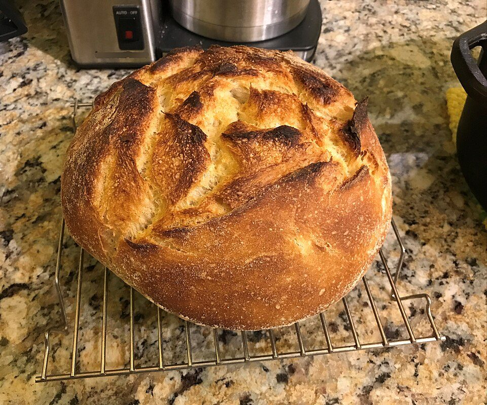

制作側の連想
手回しパスタマシンの部位を、配置図にしてみる
このサイトは、机の縁に取り付けて使う手回しの製麺機を図にしてみました。六つの部位に番号をふり、上の図と並べています。制作側の連想で、お店の理念・由来とは無関係です。実際の機種の仕様を示すものでもありません。
凡例
六つの部位
- 1ハンドル回して生地を送り出すための、取っ手つきのクランク(腕)。
- 2ローラー生地をはさんで薄くのばす、上下二本の円柱。
- 3幅調整ダイヤルローラーのすき間を変えるための、回して合わせる目盛り板。
- 4カッターのばした生地を細く切る、櫛のような刃を並べた部分。
- 5クランプ机の縁に本体を固定するための締め具。
- 6本体フレームローラーやダイヤルを支える、金属の骨組み。
ギャラリー(イメージ)
パンとコーヒー豆の写真




写真はパンとコーヒー豆のイメージです。お店のものではなく、お店で提供している商品を示すものでもありません。
ご案内
お店のこと(確認できたものだけ)
| 所在地 | 〒950-1471 新潟県新潟市南区和泉428-9 |
|---|---|
| 電話 | 準備中 |
| 営業時間 | 準備中 |
| 定休日 | 準備中 |
| ご予約 | 準備中 |
| 駐車場 | 準備中 |
| SNS | Instagram @boulangerie_sasagawa |